Information Management
Assignment 1
Q1: Name and describe three applications you have used that employ a database system to store and access persistent data
1.) Social Media Platforms
2.) Ride Sharing Apps (Uber and Lyft)
3.) Amazon
Q2: Propose three applications in domain projects, purpose, function, and simple interface design
1.) Social Media Platforms (LinkedIn & Instagram)
Domain: Social Media
Purpose: Connect with people professionally or socially by sharing content, building a network, or finding job opportunities
Function: User profiles, posts, messaging, and interaction notifications
Simple interface design: Homepage, profile page, navigation bar, post button, search bar
2.) Ride Sharing Apps (Uber & Lyft)
Domain: Transportation
Purpose: To connect riders with nearby drivers
Function: User accounts, ride requests, GPS tracking, digital payment, rates, and reviews
Simple interface design: Request ride feature, driver details, location pick-up/drop-off, map
3.) Amazon
Domain: Digital commerce
Purpose: Online shopping for products ranging from electronics to groceries
Function: Product catalog, Shopping cart, track orders, user account, recommendation pop-ups, payment
Simple interface design: Homepage, search bar, product page, checkout page
Q3: If data can be retrieved efficiently and effectively, why is data mining needed?
Data can be retrieved efficiently and effectively from a database, but it can only do so much with just raw data. Data mining plays a significant role in revealing patterns, trends, and insights with large datasets to discover hidden relationships and make predictions to support informed decision-making. This is something that a simple retrievalcannot provide.
Q6: Describe at least three tables that might be used to store info in a social network/social media system, such as Twitter or Reddit
1.) User’s Table
User id (Primary Key) – uniquely identifies each user
Username – display name
Email – contact information
Password – for authentication
Date joined – when the usercreated their account
Profile info – optional bio, profile picture URL
2.) Posts Table
Post id (Primary Key)
User id (Foreign Key) – links to Users table
Content – text, media link, or URL
Timestamp – when the post was created
Engagement metrics
3.) Followers/Connections Table
Follower id (Foreign Key to Users) – user who follows
Followee id (Foreign Key to Users) – user being followed
Follow date – time stamp ofwhen the connection was created
Assignment 2
Q1: What are the differences between relation schema, relation, and instance?Give an example using theuniversity database to illustrate
A relation schema is a visual of the table name and columns that it contains. It is essentially the structure of the table. Ex: Instructor (ID, Name, Dept_name, Salary). This is a relation schema because it doesn’t include any actual data, but defines what info will be stored
A relation is the actual table that follows the schema. Ex: instructor table with rows like (10101, Srinivasan, Comp. Sci., 65000)
An Instance is the part of the data in the table that is changed in a moment of time. Ex: If a salary changes or a new instructor is added, the data changes, creating a new instance, but the schema stays the same.
Q2: Draw a schema diagram for the following bank database:
branch (branch_name, branch_city, assets) | customer (ID, customer_name, customer_street, customer_city) | loan (loan_number, branch_name, amount)| borrower (ID, loan_number) | account (account_number, branch_name, balance) | depositor (ID, account_number)
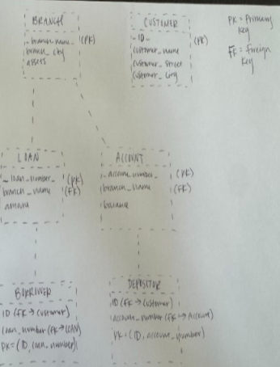
Q3: Consider the above bank database. Assume that branch names(branch_name) and customer names (customer_name) uniquely identifies branches and customers, but loans and accounts can be associated with more than one customer
i. What are the appropriate primary keys (underline each in the diagram)
ii. Given your choice of primary keys, identify appropriate foreign keys defined
i. Branch (branch_name), Customer (customer_name), Loan (loan_number), Account (account_number), Borrower (customer_name, loan_number), Depositor (customer_name, account_name)
ii. LOAN.branch_name –> BRNACH.branch_name, ACCOUNT.branch_name –> BRANCH.branch_name, BORROWER.customer_name –> CUSTOMER.customer_name, BORROWER.loan_number –> LOAN.loan_number, DEPOSITOR.customer_name –> CUSTOMER.customer_name, DEPOSITOR.account_number –> ACCOUNT.account_number
Q4: Describe two ways artificial intelligence or LLM can assist in managing or querying a database. In your answer, briefly explain how each method improves efficiency or accuracy compared to traditional (non-AI) approaches
Natural Language Querying: Learning Language Models or Artificial Intelligence can turn the language we speak everyday into SQL queries. Instead of manually writing SQL it reduces errors and saves time. An example of this is typing “Show all loans over $10,000 from Comp Sci branch” then AI will generate a query for this.
Data Cleaning and Anomaly Detection: AI can automatically detect duplicates, unusual patterns, and mistakes in data. It can find problems that simple rules or humans might miss, which improves the occurrence while also making database analysis more reliable
Assignment 3
Q: Write SQL
i. Student ID (hint: from the takes relation)
SELECT DISTINCT ID
FROM takes;
ii. Instructors
SELECT name
FROM instructor;
iii. Departments
SELECT DISTINCT dept_name
FROM instructor;
Question 3: Write in SQL codes to do the following series
ID and name of student who has taken at least one Comp.Sci course
i. Select distinct student.ID, name from student inner join takeson student.ID = takes.ID inner join course on takes.course_id= course.course_id where course.dept_name = ‘Comp. Sci.’. Sci.’
Add grades to list
ii. Select distinct student.ID, student.name, takes.grade from student inner join takes on student.ID = takes.ID inner join course on takes.course_id = course.course_id where course.dept_name = ’Comp.Sci.
Find ID and name of each student who has not taken any course offered before 2017
iii. Select student.ID, student.name from student where student.ID in (select distinct takes.ID from takes join section on takes.course_id = section.course_id and takes.sec_id = section.sec_id and takes.semester = section.semester and takes.year = section.year where section.year > 2017)
For each department, find max salary of instructors
iv. Select dept_name, max(salary) as max_salary from instructor group by dept_name
Find Min. Salary
v. Select dept_name, min (salary) as min_salary from instructor group by dept_name
Add names to list
vi. Select instructor.dept_name, instructor.name asinstructor_name, instructor.salary as max_salary FROM instructor join (Selectdept_name, MAX(salary) as max_salary from instructor group by dept_name) max_salaries ON instructor.dept_name = max_salaries.dept_name and instructor.salary =max_salaries.max_salary
Q4:find instructors with nameand ID who have nevergiven an A grade in anycourse she/he has taught (instructorswho have never taught trivially satisfy)
Select distinct instructor.name, instructor.IDfrom instructor left join teacheson instructor.ID = teaches.ID left join takes on teaches.course_id = takes.course_idand teaches.sec_id = takes.sec_id and teaches.semester = takes.semester andteaches.year = takes.year wheretakes.grade <> ‘A’ OR takes.grade is NULL
Assignment 4
Q1: Difference between a weak and strong entity set
A weak entity set is where an entity is dependent on another entity set (identifying entity set). Instead of using the primary key of the weakentity set, we use the primary key of the identifying entity set. Extra attributes called discriminator attributes to uniquely identify weak entity set. A strong entity set can stand alone. Has unique primary key that identifies each entity in the set
Ex: Advisor, prerequisite –> lacks independence
Q2: Design E-R Diagram
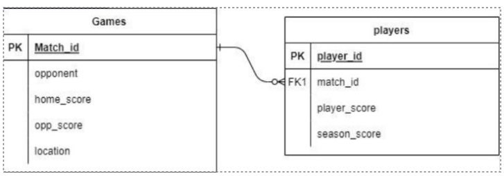
Q3A: Explain why appending natural join section in the from clause would not change the result.
It doesn’t introduce additionally filtering or groupings.
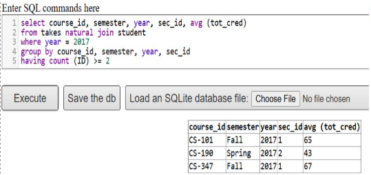
Q3B: Write an SQL query using the university schema to find the ID of each student who has never taken a course at the university. Do this using no subqueries and no set operations (use an outer join). (Consult Ch. 4, 4.1.3)
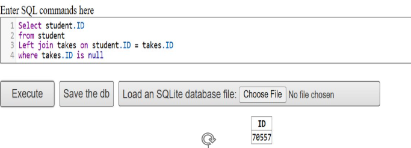
Assignment 5
Q2: Construct E-R diagram for a hospital with a set of patients and a set of medical doctors. Associate with each patient a log of the various tests and examinations conducted
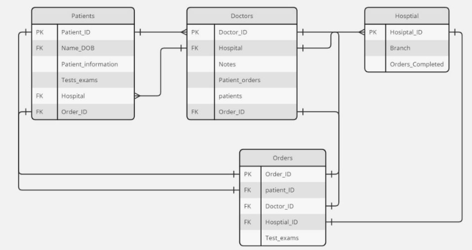
Q3: We can convert any weak entity set by simply adding appropriate attributes. Why then do we have weak entity sets?
It’s technically possible to convert a weak entity into a strong one by adding unique attributes, but we preserve data integrity to maintain weak entity sets. We create a more efficient modular database structure and reduce data redundancy by keeping these entities dependent on a parent. It is easier to manage and align with real world relationships.
Q4: SQL exercise
Part A
i.Find ID and name of each employee who lives in the same city as the location of the company for which theemployee works.
Select employee.ID, employee.person_name fromemployee e join works w on e.ID=w.ID join company c on w.company_name = c.company_name wherec.city = ecity
ii. Find ID and name of each employee who lives in the same city and on the same street as does her or his manager.
Select employee.ID, employee.person_name fromemployee e join manages m on e.ID = m.ID where.city = m.city AND e.street = m.street
iii. Find ID and name of each employee who earns more than the average salary of all employees of his or her company
Select employee.ID, employee.person_name from employee e join work w on e.ID = w.ID join ( select company_name, AVG(salary), as avg_salary from w group by company_name)as avg_salary on w.company_name =avg_salary.company_name where w.salary > avg_salary
Part B
Q4: Consider the following SQL query that seeks to find a list of titles of all courses taught in Spring 2017, along with the name of the instructor. What is wrong with this query?
Query use of NATURAL JOIN over several tables is the problem. This automatically joins tables using all columns, even those that are not meant to be joining tables. Both the section and instructor tables have a column called dept_name. NATURAL JOIN will try to match the columns when it’s only supposed to connect instructors to their courses. A better way to write this is by using JOIN condition to ensure the database is connecting tables with columns we actually want.
Assignment 6
Q1: Look up websites containing the following data representations. Analyze the websites in terms of structure and composition. Name the technology/methods use for creating the web database:
a) Using JSON
JSON represents structured data based on JavaScript object syntax and has a standard text-based format. It is easy for machines to generate and parse as well as for humans to read and write because of its lightweight data interchange format. It resembles JavaScript object syntax and is commonly used for sending data from a server to a client so it can be displayed on a web page, and is commonly used for transmitting data in web applications. JSON serves as a string with a specified data format consisting of ordered lists and key-value pairs
b) Using XML
XML is a markup language designed to transport and store data while being both machine and human readable. XML’s focus is usually on giving users the ability to define their own custom tags, while on the other hand, HTML focuses on how the data looks. XML plays a big role in the enterprise environment and different IT systems for distributing data over the internet. It’s a meta-language that is used to define or create other languages.
Q2: SQL exercise
i. Express the following query in SQL using no subqueries and no set operations
Select ID from student s left outer join advisor i on s_id=i_id where i_id is not null
ii. Using the university schema, write an SQL query to find the names and IDs of those instructors who teach every course taught in his or her department.
Select name, ID from instructor i join course c on i.dept_name = c.dept_name group by i.ID, i.name HAVING COUNT (DISTINCT c.course_id) = (SELECT COUNT (*) FROM course WHERE dept_name) ORDER BY i.name;
Lab R and PostgreSQL (1)
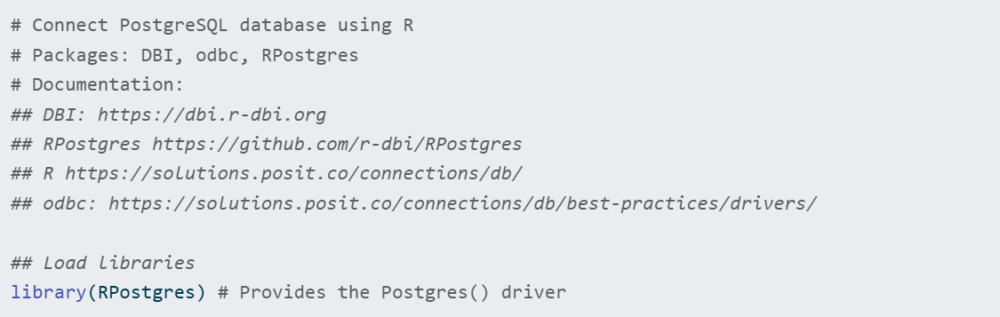
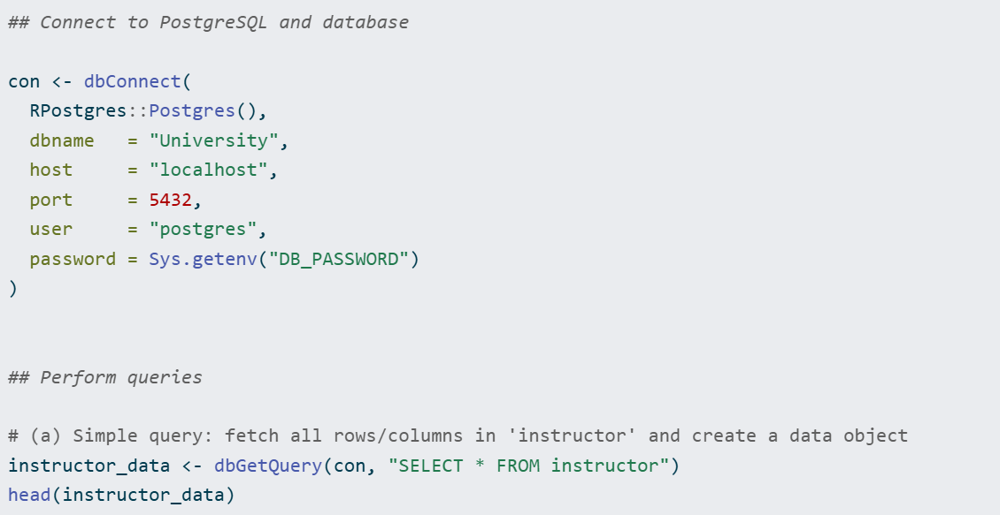
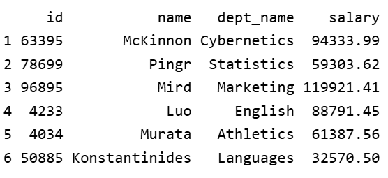
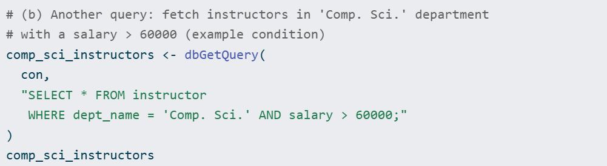
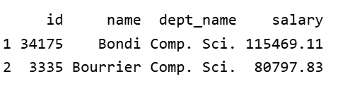
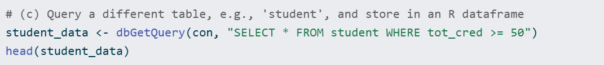
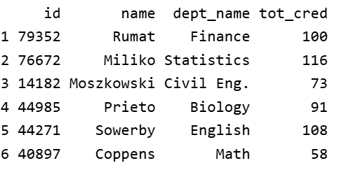
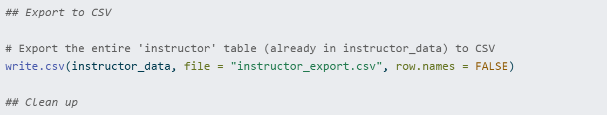
Database Project Progress Report (1)
The objective of this Database project is to create an online book recommendation system based off of a reader’s past liking. To narrow the scope of what this platform will do, I am pivoting from a broad social reading platform to focusing on building the Database with SQL/PostgreSQL and hosting the website on Shiny and GitHub. The goal is for this engine is to analyze the reader’s book of choice and provide book matches based on the embedded cosine similarity I am implementing. An additional feature I’m adding is the ability of users to create their own profile and type in the book and author name of your liking that already does or does not exists in the dataset and recommendations will pop up based on the ratings/reviews. I have shifted the focus of the project from creating a system that can provide a vibe matcher book instead of providing a palate cleanser one. Ideally, this will serve as a quick search for readers to explore new books that match your liking and will be used as a predictive trend analyzer and digital memory for reading communities. Current progress has been made in terms of data collection from existing sources of Kaggle book datasets from Amazon, Goodreads, and Reddit forums along with my own search from these open sites. I have refined/organized these large data volumes into excel spreadsheets and then exported that data into PostgreSQL to be confined in 3 tables: books, reviewers, and reviews.
Books —> book_id, book_name, author_id
Reviewers —> reviewer_id, reviewer_name
Reviews —> review_id, reviewer_id, book_id, rating
Database Project Progress Report (2)
My progress with my Database Project consists of working on the frontend of the project by using Shiny and RStudio while maintaining a connection to the Neon PostgreSQL database that has already been built. My focus has been to deploy the Cosine Similarity algorithm in R by identifying and calculating geometric angles between reader preferences. When extracting book review data from Goodreads, Amazon, and Reddit, I tried incorporating as much real data as I could, but a problem that I ran into was that each of the reviewers only had 1-2 reviews in the data, which made it impossible to draw meaningful results from the cosine similarity. To solve this problem and imitate the potential end goal of users having sufficient set reviews, I created pseudo-data with the same reviewers and books. I added randomly generated ratings to increase the robustness of the dataset and mimic real usage. This mirrors real implementation closely; rather than if a user has only rated 1 book, then the cosine similarity isn’t useful. My book recommendation system now provides personalized recommendations based on shared behavioral patterns from vectors and not just simple metadata. The system is live on Shiny, allowing users to register, rate books, and receive mathematical matches. Ultimately, the platform serves as a conceptual idea for a predictive digital memory for the reading community.
Assignment 7
Assignment 8
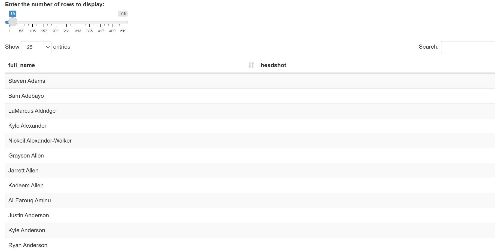
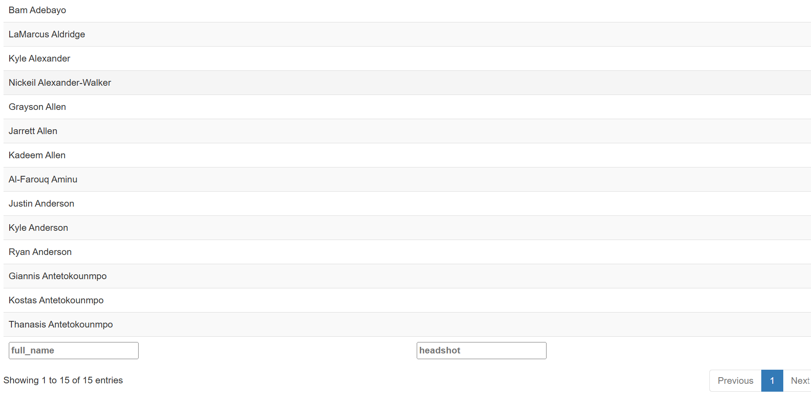